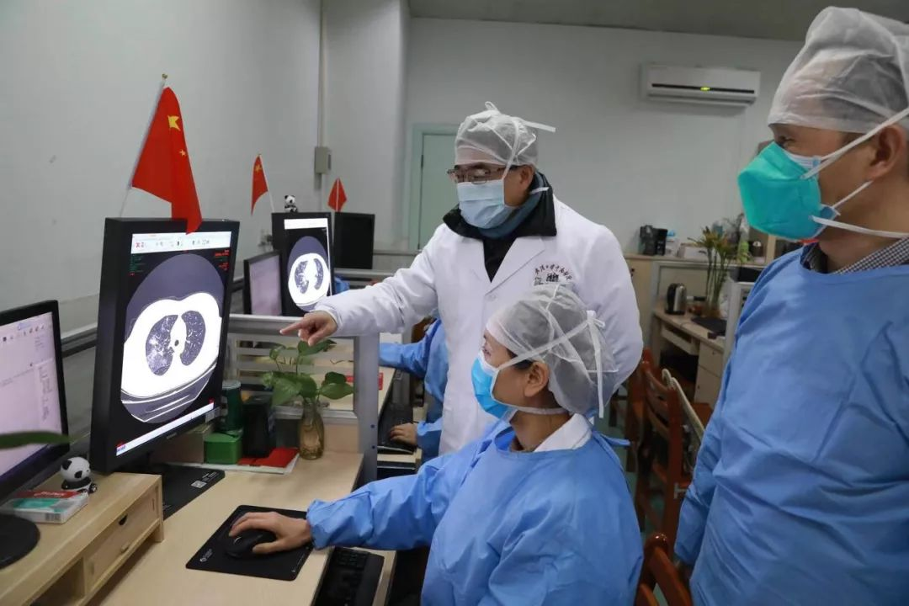
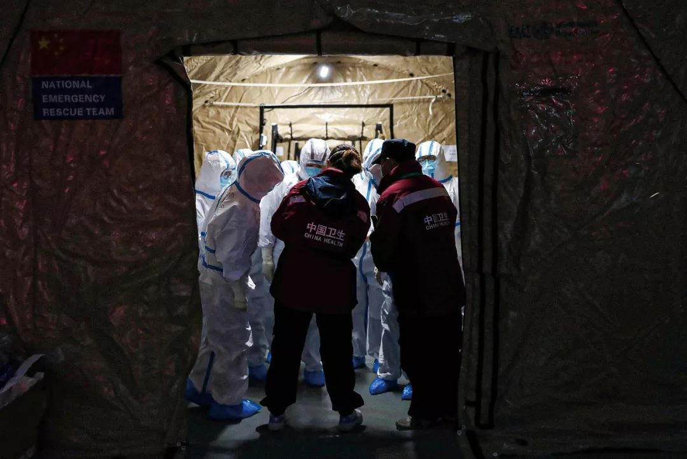
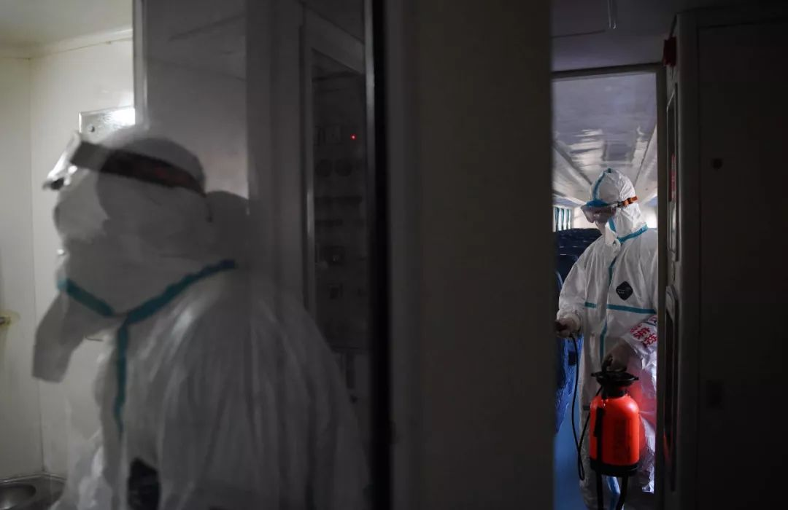

气溶胶传播说法不一，新冠病毒感染率可能为 1%，以及其他 35 条疫情新闻
原文链接 备份链接 根据丁香医生实时数据，截至 2020 年 2 月 9 日 18 时，全国累计确诊病例 37286 例，疑似病例 28942 例，新增确诊病例 2692 例，新增疑似病例 3916 例。其中，重症病例 6188 例，死亡 …


司机停下车来思忖着说，怎么给导到这里来了？
那是一条土路，树在旁边矗立着。春天还没到来，它的叶子还没长出来。
“前方800米左转，500米后再左转”，导航里的声音软糯着。
金银潭医院是此次行程的目的地。这是武汉市最大的传染病医院，如果不是因为新冠肺炎的暴发，更多人知道的是它的另一个名字：武汉市医疗救治中心。平时，它也让人不想接近，当地人的说法是：都是传染病，比如艾滋病。
远远的，84消毒液的味道，不知怎么就进了封闭的车厢，进了车内人的嗅觉里。浓浓的，散不去。
医院门口，一辆120停着，车外几个蓝色衣服的人和穿着防护服的医生，压低声音地商讨着，一旁有人举着设备记录。
不知道车内的人是什么情况。

没时间悲伤
门卫问一个走进医院的人，你找谁？
那人说，找一个患者。
门卫往后转了转身，回头问他：“这后面三栋楼都是患者，全都是（新型冠状病毒）肺炎。你找哪个？”
疫情暴发以来，进出金银潭医院的患者超过800人，医院有600多名职工。

武汉金银潭医院（图/无畏）
48岁的樊艳青是600多职工之一，是金银潭医院的放射科主任。
她带的团队有21人，主要工作是为所有住入医院隔离病区的重症和危重患者，拍CT片和拍X光片，填写入院病情评估报告。
樊艳青说她时刻提醒自己，“不要流泪。眼睛是用来看CT和X光片子的”。她目睹了各种肺部感染的患者，有的甚至成了“白肺”。
“没时间悲伤，必须及时高效写出病情报告，这种新型冠状病毒在肺部变化快。”
樊艳青支持将CT结果纳入新冠肺炎诊断的标准，对于此次疫情中的病患来说，这是一个能更快筛查、诊断的方式。
樊艳青认为，核酸检测试剂盒是一种精准的确诊手段，但由于每个人体征不一样，会呈现出假阴性的情况。比如，病毒已深入肺部，咽拭子检测不一定明确，只能算是疑似患者。
“这次新型冠状病毒肺炎患者的肺部影像，最显著的表现是肺部感染呈磨玻璃病变，重症患者的肺部出现一片白。”
而每一张“白肺”片子，就意味着一名患者挣扎在死亡的边缘。

2月2日，武汉大学中南医院影像科主任徐海波教授（白衣者）与同事在查看患者的CT检查影像
2月6日，关于“将CT影像检查作为高度疑似病例筛查主要依据”的呼吁，被纳入国家卫健委最新发布的《新型冠状病毒肺炎的诊疗方案（试行第五版）》。
根据最新版的诊疗方案，CT结果纳入湖北临床诊断标准。
呼吁来自以武汉大学中南医院张笑春为首的多名抗疫一线的医务专家。
一直奋斗在一线的张笑春认为，应将CT检查作为新冠肺炎的主要诊断依据，结合流行病学史和临床表现判断病情，让重症患者优先住院，让轻症患者集中隔离。
她说，“病毒核酸检测是最终确诊新型冠状病毒肺炎无创诊断的金标准，然而检测出‘CT阳性、核酸阴性’的结果，可能影响临床排查。目前新型冠状病毒核酸检测特异性高、敏感性偏低，不排除存在部分假阴性。”
“CT检查方便、快捷、直观，在基层医院易于普及。虽然CT只是辅助诊断手段，但在新型冠状病毒肺炎形势严峻的今天，武汉等地区的防控必须采取‘不放过一个’的非常规手段，减少交叉感染。” 电话那头，张笑春不时咳嗽。

同时她也提醒，CT阳性和病毒核酸检测阴性的患者，也要被纳入隔离治疗的范畴，非常时期“宁错勿漏”，即使是其他病原体肺炎，也会因为及时治疗而受益。“只有这样才能够尽快控制传染源、切断传播途径，使得尽可能多的人不被感染，以及感染的无症状患者能及时被发现和及早治疗。”
樊艳青说，在此之前，金银潭医院已将CT报告作为病情评估的第一道关口。
她说，CT机对这种病毒感染很敏感，可以做到早发现。她对团队里的人也再三叮嘱，“病毒隐藏很深，必须细心甄别”。

往前一点，哪怕不及
2月3日，武汉宣布在三处地方计划修建方舱医院时，张芳急了。
她在朋友圈说汉口北批发城有相对独立的空间可以供患者使用，她征求了其他业主的意见，业主们也都同意。
张芳表示，每家商铺50平方米左右，还有的 100平方米。商铺购买于9年前，一直以来，招租率不高，没有正常投入使用。只有少部分商铺平日开张，但大部分还是闲置未用状态，对张芳来说，“最重要的是，每个商铺水、电、气、中央空调都具备”。在张芳看来，这样有利于避免交叉感染。

武汉一个会议中心改成的临时医院
张芳快言快语，现在一切就是赶时间。她说现在很多电话打给她，她疲于应接，又不敢不接，怕万一是真正重要的电话。为了不影响家人，她一直坐在阳台。
对她来说，真正重要的电话是来自卫生健康机构有决策能力的人。他们能决定是否征用她们的商铺，她说，她的出发点很简单，就是“赶紧让患者住进去，赶紧好起来”。
上万张床位的方舱医院，专门收治轻症患者与65岁以下的患者。45岁的吉玲是入住患者之一，与她一样，入住后的患者对方舱医院的硬件条件、医护设备，充满了紧张感，她认为，可能满足不了她们作为患者的需求。
吉玲的丈夫也是新冠肺炎感染者之一。“他是重度，在金银潭医院。”
吉玲的紧张，对轻症患者居家还是集中又提出了新的疑问。
一直在抗击肺炎一线的微博博主“协和医生do先生”同样也看到了来自方舱医院患者的声音。

武汉方舱医院
“方舱医院是为了救人。”他希望，现在不要给方舱制造负面舆论，如果让其他患者都拒绝入住，害的是更多人。负面的评价与预估，也会让住进方舱医院的病人更加恐慌，扰乱正常医疗秩序 。“万事开头难，请大家耐心等待，生活物资和医疗服务措施会慢慢跟上的，也会让患病的病人慢慢康复，更是保护自己心爱的家人。”
在他看来，根据现在一万多例病人的分析，这些进入方舱医院的轻症患者95%以上都可以自愈，坚持2~3周就能自愈出院了。而且，医院里每天都会有医生巡查，那些少于5%的患者万一不幸病情加重，将会优先安排进入定点医院进一步治疗，不用等床。
“你呆在方舱医院的每一天，都是为了救你的亲戚朋友、乡亲父老。相信国家，相信政府。”
2月11日，江汉和武昌方舱医院共有34名患者达到出院标准，成为第一批“出舱”患者。其中，江汉方舱6人，武昌方舱28人。与此同时，能够容纳6000张床位的汉阳方舱医院也正式启用。

我是武汉人，我知道的
截止至2月12日17时，全国确诊病例达到44763例，但与确诊、疑似和死亡人数同时增加的，还有治愈者的数据，如今治愈人数已经增加至4976人。
武汉某医院外科医生石强认为，应该利用网络视频平台，请现在痊愈的患者分享自己的感受，鼓舞那些轻症患者，网络视频实时交流提问。他认为这强过医护和亲人。
“战场除了需要宣传，也需要牧师。”他的观点得到同行的认同。
他说疫情暴发以后，有很多关于什么药有效、哪里又建医院了的信息，“更重要的应该是从建设性的流程和管理方向反思”。
石强不在一线，也不是一线对口专业的医生，“一线医生都累晕了，高度紧张”。他认为，整个事件可以从中国疾病预防控制中心应该在这种公共卫生事件中的地位和权限多提建设性意见。

图/无畏
是什么让我们没有提高预警程度？
在他看来，是疾病预防控制中心没有把危险性足够表达出来。“有的医院医护发现感染后就听从了专业医生的警示，提高了防护。所以那个医院医护感染人数是最少的，他们偷偷取消了医院所有集体会议、活动，包括春晚。因为大张旗鼓，一旦问责就会引起社会恐慌。”
而一线医护发生感染，就足以说明一切。“急诊科人员在这种季节都会戴口罩、帽子。反观泰国和香港地区就非常警惕，说明他们的体系建设是到位的。”
最早查出来的新冠肺炎患者有治愈的，“可以把他们作为典型案例。如果要分析背后更深层次的原因，需要找到典型大医院那段时间发热门诊的挂号量。”
究竟，应该制定什么样的政策，应该怎样发布，才不会造成医疗恐慌和挤兑？“当时的急诊挂号量，也可以分析出，这种医疗恐慌和挤兑，造成了大量交叉感染，普通流感病人被感染成为了新冠肺炎。”
石强说他作为医生最担心的是，“如果基层社区工作没办法做到位，后面就很难办”。
政府发布了强制隔离措施，不管同不同意，必须遵守。“这实际上涉及政策制定问题，政策制定需要科学依据，也需要考虑人文和人群心理因素，在这个疫情面前，任何政策必须是利他才能利己。政策不考虑人性中的阴暗面是不行的。”

与此同时，此次疫情中的志愿者徐丹丹在自己家里感到呼吸出现了问题，“呼吸急促，而家里只有她一个人”。此前武汉志愿者车队54岁的何辉去世，引起人们对加强志愿者防护的呼吁和重视。
徐丹丹的电话号码和社区医院电话被传到了网上。
采访时，徐丹丹正在医院门口排队。
她说：“所有人都需要帮助。我是志愿者，我知道流程是什么样的。这时候，每个人只能走流程，我不是有特权的人，我不能只想着自己，而把别人的生命排除在外。每个人的生命都很宝贵。因为我的事情，很多人给我的社区医院打电话，社区说接到30多个电话，这样就导致电话占线，其他求助者打不进来。我是武汉人，我现在身体不舒服，遇到这种情况，我心里知道的。”
（文中吉玲、石强、徐丹丹为化名）
作者 | 陈莉莉
编辑 | 李少威
排版 | 阿丽菜
南风窗新媒体出品

_
_


点击购买最新一期《南风窗》
点在看让理性的声音传得更遥远

原文链接 备份链接 根据丁香医生实时数据，截至 2020 年 2 月 9 日 18 时，全国累计确诊病例 37286 例，疑似病例 28942 例，新增确诊病例 2692 例，新增疑似病例 3916 例。其中，重症病例 6188 例，死亡 …
原文链接 备份链接 记者/ 魏晓涵 梁婷 韩谦 佟晓宇 实习记者/ 陈威敬 胡琪琛 编辑/杨宝璐 宋建华 医护人员严阵以待 摄影/高瞾 2019年12月30日，武汉市卫计委内部文件流出，称“武汉出现不明原因的肺炎”，与华南海鲜批发市场有 …
原文链接 备份链接 蔡婷说：“大家都荒谬到这个程度了。” 2月5日下午，湖北省人民医院拥挤的门诊部，蔡婷排了3个小时的队。这家医院昨天做了1500份新型冠状病毒的核酸检测，43岁的蔡婷和母亲的样本，也在其中。现在，蔡婷全部心思都在这上面， …
原文链接 备份链接 根据国家卫健委的通报，截至1月23日零点，共统计到国内新型冠状病毒感染的肺炎确诊病例571例，其中超过400例来自湖北。死亡17例，均来自湖北。此刻的武汉面临以下问题：试剂盒数量不够、确诊艰难、床位短缺、高度疑似患者 …
原文链接 备份链接 实习生 于洋 澎湃新闻记者 赵思维 2月5日晚，湖北武汉洪山体育馆改造的武昌方舱医院开始接收首批新冠肺炎轻症患者。至11日8时，武昌方舱医院先后投入120名医生、400名护士的医护力量，目前仍有437位轻症患者在接受治 …